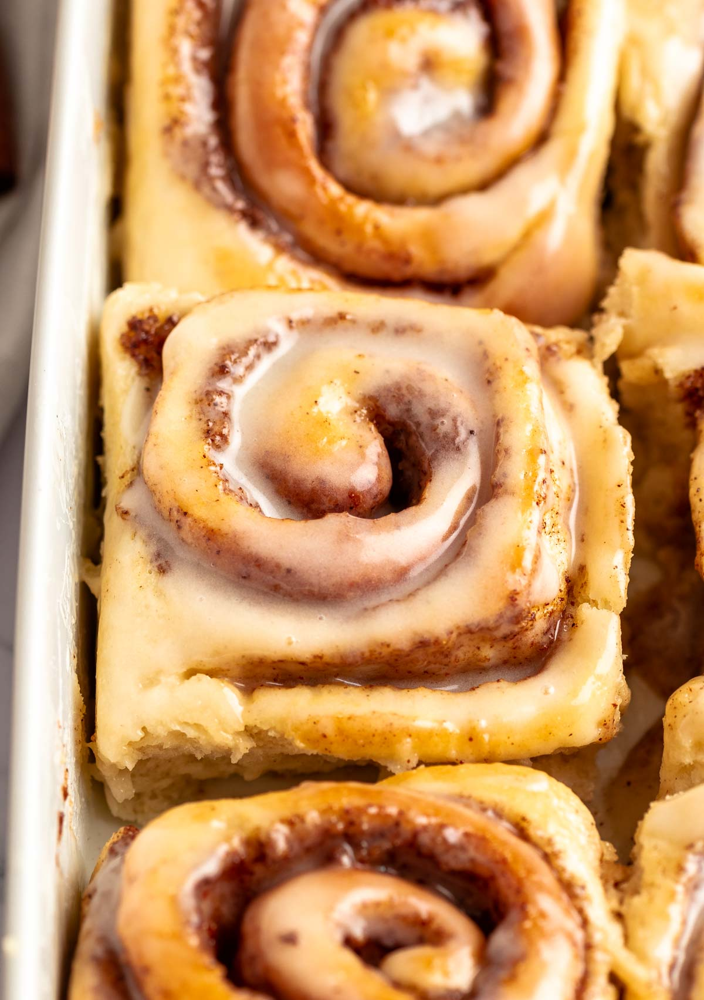

Cinnamon Rolls

Description
Prepare to be amazed by these sensational cinnamon rolls that
took TikTok by storm. The secret? Pouring heavy cream over the rolls
before baking, resulting in an exceptionally gooey and tender texture
while keeping them moist throughout. While this recipe typically calls for
store-bought cinnamon rolls, I took it upon myself to elevate it by
crafting them from scratch. Trust me, the extra effort pays off, as the
homemade version always delivers the most delectable taste. Prepare to be
thoroughly satisfied by these extraordinary cinnamon rolls that truly live
up to their reputation!
Ingredients
- 5 1/2 cups flour
- 1 tablespoon instant yeast
- 1/3 cup granulated sugar
- 1 teaspoon kosher salt
- 1 teaspoon vanilla extract
- 1 1/4 cups milk
- 2 eggs, room temperature
- 60 g Butter melted and cooled
- 1/2 cup Heavy cream
- 115 g butter, softened
- 2 tablespoon cinnamon
- 1 cup brown sugar
- 60 g butter
- 120 g cream cheese
- 1/4 teaspoon kosher salt
- 1 teaspoon vanilla extract
- 2 cups powdered sugar
Steps
-
In a bowl of a stand mixer, add the flour, dry yeast, and granulated
sugar. Mix with a spoon until combined. Add the salt, and mix until
combined.
-
Add the eggs, room-temperature milk, vanilla extract, and cooled melted
butter. Start mixing on low until the dough forms.
-
Increase the speed to medium and mix for at least 8 minutes or until the
dough is smooth and silky.
-
Cover the bowl with plastic wrap and let the dough rise at room
temperature for 1-2 hours or until it's doubled in size (or even
tripled in size).
-
Punch the dough down and transfer it to a clean floured surface.
Sprinkle flour generously on the dough and roll it into a ¼-inch thick
rectangle, making sure that the bottom of the dough doesn't stick to
the surface.
-
Into a small mixing bowl, add the softened butter, cinnamon, and brown
sugar, and mix until smooth.
-
Spread an even layer of the cinnamon roll filling with a spatula on the
dough.
-
Roll the dough tightly into a log and pinch the edges of the dough to
keep the roll sealed tightly. Use a serrated knife or unflavored dental
floss and cut the rolls into 12 even rolls.
-
Place the rolls in a lightly greased 9x13 inch baking pan, cover with a
towel, and let the rolls rise until doubled in size.
-
Remove the towel, and pour the heavy cream over the cinnamon rolls and
in between each one.
-
Bake the rolls in a 350F oven for 20-25 minutes or until the tops of the
rolls are a bit browned. Don't overbake these so they won't dry out.
-
Make the glaze: In a medium-sized bowl, add the softened cream cheese,
softened butter, powdered sugar, and vanilla extract. Mix with a spoon
or a tiny whisk until creamy and smooth.
-
Let the rolls cool for 5 minutes and then top them with the cream cheese
glaze and serve!
Back to Homepage